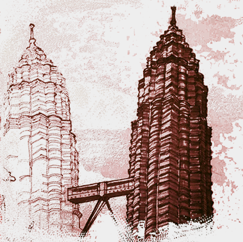

This Amazing Person

Who is this amazing person?
Kind wife, kind child, all kindness
Regal enough to be a king – but mild
Find myself struck with a sudden blindness
Let’s step back
In KL drawing the Petronas twins
It’s stifling but I finish the linework
Store the drawing for now – sights to see
The bridge between a must with my architecture quirk
Elevator down
Now what? – Here to draw a monument
Too hot to color, to shade, without shade
Pull up a map app – a restaurant nearby
Walk around the block and a lobby I invade
Elevator up
Opens to one restaurant – I’m underdressed – or over-sweated
A quick question, a quick point, through there?
A beautiful Steinway, a glorious lounge, a span
A bridge between buildings with a neighbor unfair
Walk across or is it through? I don’t know...
This transitional space holds the power of this building
I’m underdressed for the next restaurant too
But I’m granted a spot because of my nod to the towers
Or a winning grin – I don’t really know how I found a seat
But I’m here for a reason, and I order gentlemanly
When I pull out my drawing, it’s only a little cower
Friends with the staff immediately
Eight markers on the table... mostly repetition
Mezcal with my server... towers have a new perspective
And so I draw. New perspective doesn’t mean new details
Allowed to sprawl across this table and go introspective
Finish my drawing
I thank my hosts and pay my bill... the work is done
Gather everything... overtip, quiet my mind, I’m welcome, I’m kind
And step back into the previous space, the bridge
But a few tequilas deep I really only have one thing in mind
A grand piano
I ask the bartender of the fanciest bridge bar I’ve ever seen
Do you mind if I play the piano in the corner – I play, I’ve learned
Looks me up and down – Ask the family over there, their choice
I approach a trio from a movie, expecting to be spurned
The warmest smiles
Of course! You play?.. Mind if I send my daughter your way?
She wants to learn too. Can she watch? I haven’t played a note
Of course... I just like to play – they resume talking... niceties offered?
I play my normal start.. Victor’s Solo... allows me to emote
They seem to forget
I’m in the mood for Moonlight Sonata – cliché – appropriate
This piano wishes my fingers across the keys... butter
Its not the most beautiful thing I’ve ever done but it’s close
And this rhapsody of a family approaches and I begin to stutter
Thank you
It seems you’re about to go. Can I get you a drink?
Will you stay and play a few more songs? No clock burning
Umm, Gin? – Hendricks, cucumber? – yeah, thank you
I already asked, but can my daughter watch – she’s learning?
Of course, as I re-sit
My eyes are watering and my heart is melting – cliché
I dance through some works I am proud I know how to play
Then I fall into a rhythm – its like I’m at home – no thoughts
Them watching – no judgement – nothing to prove or say
I stand
He comes over with the warmest of gaits – daughter in tow
What do you say – Gracias – No... thank you – Mexican?
We are from Mexico City, si – Si, I see. He laughs. I’m struck.
I am gross and dirty – what are these niceties for this traveling bum?
Can I hug you?
Before you go?
You’ve brought us joy and timid kindness for an hour or more or so
Uhhh.. yeah of course...
We hug
I leave the lesser of two bridges spanning buildings this block
Struck by the simple, profound kindness of a family I barely met
I’m not even sure he knows where I’m from, what I do, anything
But this interaction might describe me better than any I have had yet
And so who is this amazing person?... How many lives has he touched?
The best question he left me wondering – is did he also view me as such?